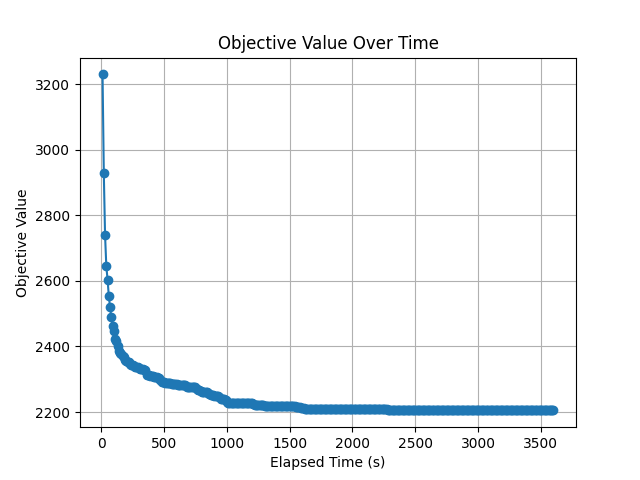
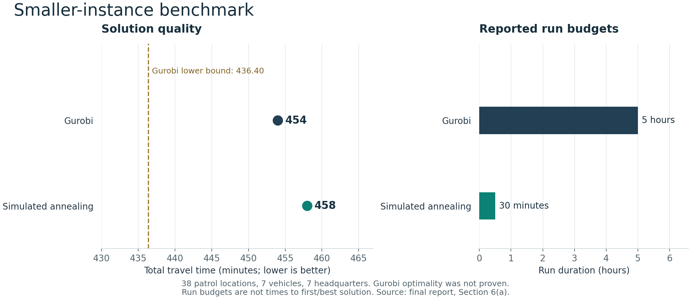

SUTD · Heuristics and Systems Theory · 2025
304 locations.
One night to cover them.
How can 56 patrol vehicles cover Singapore within a ten-hour shift? We combine a greedy starting solution with simulated annealing to minimise travel time across seven headquarters.
Explore the final routes- Patrol locations
- 304
- Headquarters
- 7
- Vehicles
- 56
- Latest return
- 599 / 600 min
01 / Explore
The final patrol routes
Zoom into an area and hover over a route to see its vehicle ID. Each tour starts and ends at its assigned headquarters; colours group routes by headquarters.
Lines connect the visited locations in order; they do not trace road geometry. The objective uses driving travel times. Map tiles and map libraries need an internet connection. View the static map from the report.

All 304 locations appear exactly once, all 56 routes return to their assigned headquarters, and every route finishes within 600 minutes. Recomputed travel time totals 2,205 minutes; the latest return is 599 minutes.
02 / Results
Fast improvements, then smaller gains

Explore first. Refine next.
The greedy solution gives the search a starting point. Simulated annealing accepts some worsening moves so it can escape local optima, while five neighbourhood operators rearrange the routes.
Travel time drops quickly at the start, with progressively smaller improvements as the search continues. The final saved objective is 2,205 minutes after a 3,600-second run.
Run settings: initial temperature 1,000; inverse cooling; temperature updated every 30 iterations.
A separate, smaller instance
How close does the heuristic get?
On 38 patrol locations with seven vehicles and seven headquarters, simulated annealing found a solution just four travel minutes above Gurobi's final incumbent, using a shorter run budget.


| Method | Travel time | Run budget |
|---|---|---|
| Gurobi | 454 min | 5 hours |
| Simulated annealing | 458 min | 30 minutes |
These are historical report values. The Gurobi solution was not proven optimal. Run budgets are not times to first or best solution, and the two methods were given different budgets.
03 / About the study
A routing problem with real constraints
The model assigns each patrol location to one vehicle, keeps each vehicle attached to a headquarters, and includes both patrol duration and travel time in a ten-hour shift. This independent university coursework project uses simulated patrol durations. It is not affiliated with or endorsed by the Singapore Police Force, and the routes do not represent actual police deployments.
Team
Carrie Tan · Chong Jun Hui · Tang Peng Siang
40.018 Heuristics and Systems Theory
Singapore University of Technology and Design, 2025
Source code and team contributions ↗
Read the final project report ↗
Open the original saved run report ↗Sources and verification notes
The interactive map and objective trace come from tsp_SAgreedy_report_20250707_001515.html. The static map is Figure 12 of the final project report; the smaller-instance comparison is redrawn from its Section 6(a) table.
The saved run was checked against T.csv and patrol timings.csv for unique coverage, depot assignment, route duration and objective value. The report's prose lists a latest return of 559 minutes; the saved report and recomputed routes give 599 minutes. This page uses the saved-run value. The original PDF and experiment files are unchanged.
Read the verification summary and source hashes. The objective trace and benchmarks are historical; the optimisation was not rerun to build this page.